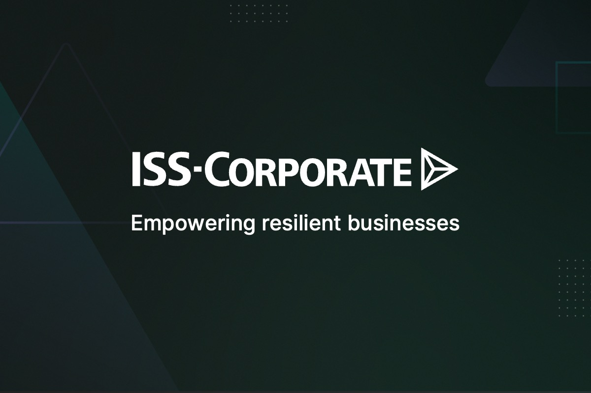
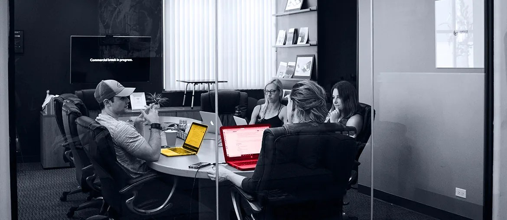

Your Data Verification page sends covered companies into Compass, while new users still request access by email. Map that path and add status, audit trail, and support flags.
Prepared for Dan Cheng, ISS-Corporate APAC
Helping ISS-Corporate ship Compass work faster, without adding drag
Compass supports governance, compensation, sustainability, cyber risk, and data verification. That is a lot of product surface for clients who need clean data and clear workflows.
Why we are here: ISS-Corporate is hiring full-stack engineers for the core platform in Oslo. That points to live delivery pressure across React, Node.js, GraphQL, and PostgreSQL.

Our read
The hiring signal tells us ISS-Corporate is scaling Compass delivery, not just filling one seat. Your Oslo roles name React, Node.js, PostgreSQL, GraphQL, Hasura, Nhost, Docker, and testing around the core platform. That points to feature load across UI, API, and data layers at the same time. The hard part is keeping Compass fast and clear while new sustainability and data-verification work moves in. If that slows, APAC client rollouts and issuer workflows can wait on engineering bandwidth.
Where we'd start
The ISSB-aligned APAC webinar and new reporting offer show rising regional demand. Instrument setup steps before the next Compass feature sprint.
What we'd do
Use a six-week dedicated squad under your PM. Team shape: one tech lead, two full-stack engineers, one QA automation engineer, and one UX designer.
Tech Lead
2 Full-stack Engineers
QA Automation
UX Designer
Trace the flows
Map Compass data-verification and ISSB setup paths, then mark slow handoffs across UI, GraphQL, and support.
Harden the core
Refactor high-change React and Node.js paths, keeping Hasura permissions and PostgreSQL queries easy to test.
Add release checks
Add Playwright and API tests around issuer access, data edits, and report setup before code lands.
Demo every week
Ship weekly demos with Docker parity, CI checks, and notes your product team can review quickly.
Likely stack: React, Node.js, PostgreSQL, GraphQL, Docker, Playwright.
Who is Elinext
Elinext is a full-cycle software development company, active since 1997, with about 700 in-house specialists and no freelancers. For ISS-Corporate, the fit is a senior web squad that can work inside your product rhythm and respect regulated data workflows. Elinext is ISO 9001 and ISO 27001 certified, which matters for governance, sustainability, and cyber-risk tools. Teams have delivered for Siemens, Broadcom, Volkswagen, TRUMPF, and TUI. The goal is simple: add delivery capacity while your PM keeps product control.
SiemensBroadcomVolkswagenTRUMPFTUI
Proof

Securities processing platform
Elinext built dashboard features for a global FinTech product, helping users navigate metrics, filters, and actions.
Read the case study
Financial market analytics platform
A dedicated team delivered a data analytics platform that turns financial datasets into clear dashboards and insight.
Read the case study